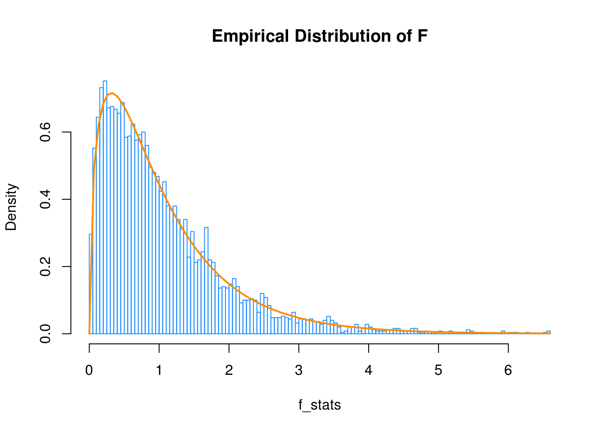
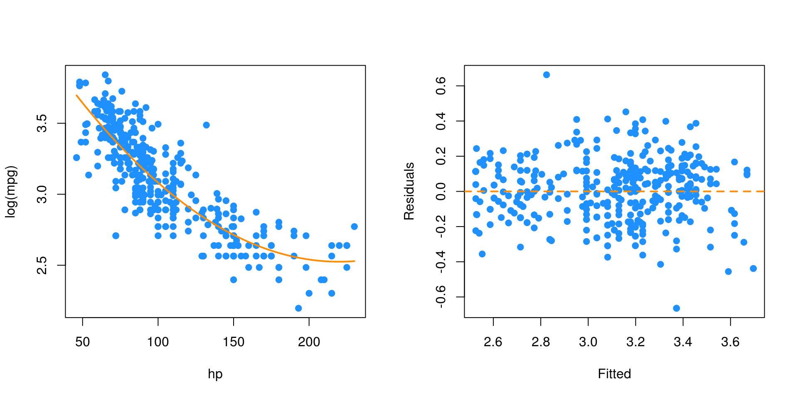
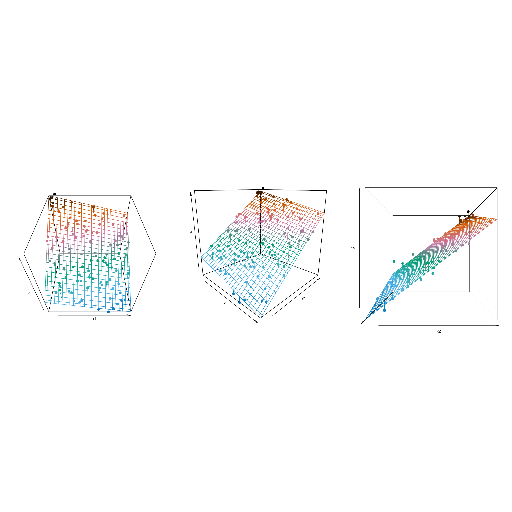
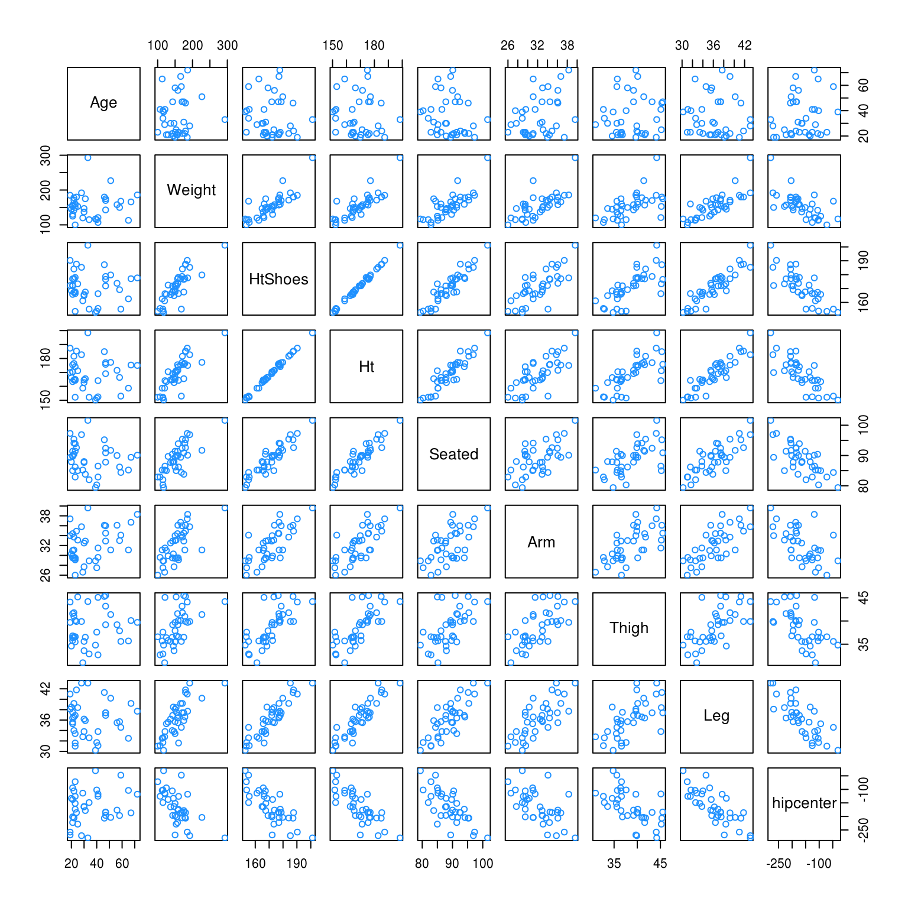
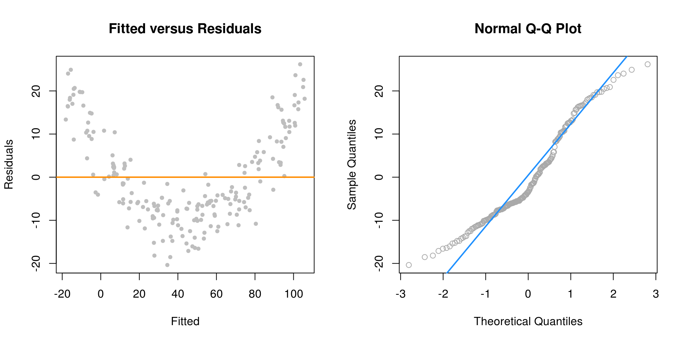
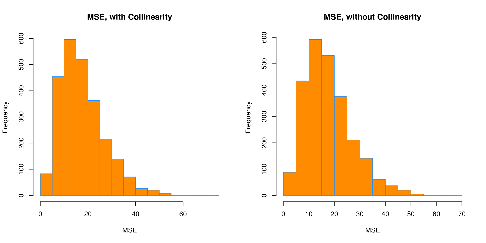
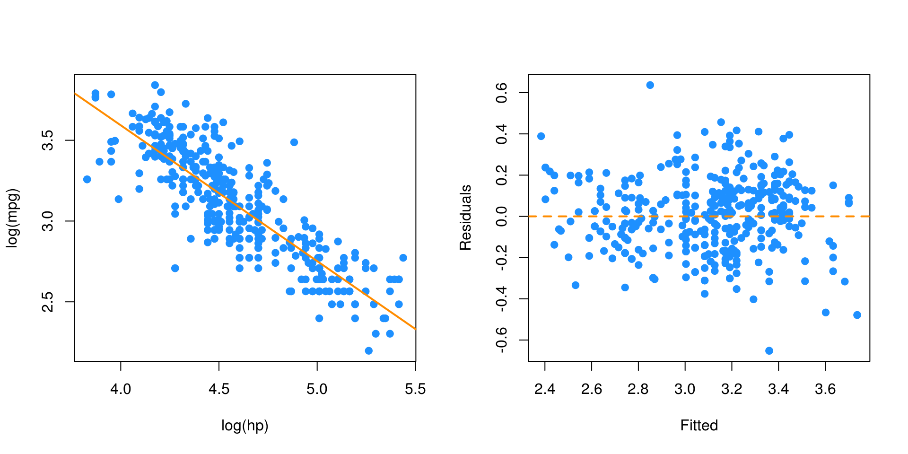

Chapter 17 Transformations Video
The following is code seen in videos for Week 8 for STAT 420 in the MCS-DS program. It will eventually be merged into the Transformations chapter of this book.
17.1 Response Transformations
initech = read.csv("data/initech.csv")plot(salary ~ years, data = initech, col = "grey", pch = 20, cex = 1.5,
main = "Salaries at Initech, By Seniority")
initech_fit = lm(salary ~ years, data = initech)
summary(initech_fit)##
## Call:
## lm(formula = salary ~ years, data = initech)
##
## Residuals:
## Min 1Q Median 3Q Max
## -57225 -18104 241 15589 91332
##
## Coefficients:
## Estimate Std. Error t value Pr(>|t|)
## (Intercept) 5302 5750 0.922 0.359
## years 8637 389 22.200 <2e-16 ***
## ---
## Signif. codes: 0 '***' 0.001 '**' 0.01 '*' 0.05 '.' 0.1 ' ' 1
##
## Residual standard error: 27360 on 98 degrees of freedom
## Multiple R-squared: 0.8341, Adjusted R-squared: 0.8324
## F-statistic: 492.8 on 1 and 98 DF, p-value: < 2.2e-16plot(salary ~ years, data = initech, col = "grey", pch = 20, cex = 1.5,
main = "Salaries at Initech, By Seniority")
abline(initech_fit, col = "darkorange", lwd = 2)
par(mfrow = c(1, 2))
plot(fitted(initech_fit), resid(initech_fit), col = "grey", pch = 20,
xlab = "Fitted", ylab = "Residuals", main = "Fitted versus Residuals")
abline(h = 0, col = "darkorange", lwd = 2)
qqnorm(resid(initech_fit), main = "Normal Q-Q Plot", col = "darkgrey")
qqline(resid(initech_fit), col = "dodgerblue", lwd = 2)
initech_fit_log = lm(log(salary) ~ years, data = initech)\[ \log(Y_i) = \beta_0 + \beta_1 x_i + \epsilon_i \]
plot(log(salary) ~ years, data = initech, col = "grey", pch = 20, cex = 1.5,
main = "Salaries at Initech, By Seniority")
abline(initech_fit_log, col = "darkorange", lwd = 2)
\[ Y_i = \exp(\beta_0 + \beta_1 x_i) \cdot \exp(\epsilon_i) \]
plot(salary ~ years, data = initech, col = "grey", pch = 20, cex = 1.5,
main = "Salaries at Initech, By Seniority")
curve(exp(initech_fit_log$coef[1] + initech_fit_log$coef[2] * x),
from = 0, to = 30, add = TRUE, col = "darkorange", lwd = 2)
par(mfrow = c(1, 2))
plot(fitted(initech_fit_log), resid(initech_fit_log), col = "grey", pch = 20,
xlab = "Fitted", ylab = "Residuals", main = "Fitted versus Residuals")
abline(h = 0, col = "darkorange", lwd = 2)
qqnorm(resid(initech_fit_log), main = "Normal Q-Q Plot", col = "darkgrey")
qqline(resid(initech_fit_log), col = "dodgerblue", lwd = 2)
sqrt(mean(resid(initech_fit) ^ 2))## [1] 27080.16sqrt(mean(resid(initech_fit_log) ^ 2))## [1] 0.1934907sqrt(mean((initech$salary - fitted(initech_fit)) ^ 2))## [1] 27080.16sqrt(mean((initech$salary - exp(fitted(initech_fit_log))) ^ 2))## [1] 24280.3617.2 Predictor Transformations
17.2.1 A Quadratic Model
sim_quad = function(sample_size = 500) {
x = runif(n = sample_size) * 5
y = 3 + 5 * x ^ 2 + rnorm(n = sample_size, mean = 0, sd = 5)
data.frame(x, y)
}set.seed(314)
quad_data = sim_quad(sample_size = 200)lin_fit = lm(y ~ x, data = quad_data)
summary(lin_fit)##
## Call:
## lm(formula = y ~ x, data = quad_data)
##
## Residuals:
## Min 1Q Median 3Q Max
## -20.363 -7.550 -3.416 8.472 26.181
##
## Coefficients:
## Estimate Std. Error t value Pr(>|t|)
## (Intercept) -18.3271 1.5494 -11.83 <2e-16 ***
## x 24.8716 0.5343 46.55 <2e-16 ***
## ---
## Signif. codes: 0 '***' 0.001 '**' 0.01 '*' 0.05 '.' 0.1 ' ' 1
##
## Residual standard error: 10.79 on 198 degrees of freedom
## Multiple R-squared: 0.9163, Adjusted R-squared: 0.9158
## F-statistic: 2167 on 1 and 198 DF, p-value: < 2.2e-16plot(y ~ x, data = quad_data, col = "grey", pch = 20, cex = 1.5,
main = "Simulated Quadratic Data")
abline(lin_fit, col = "darkorange", lwd = 2)
par(mfrow = c(1, 2))
plot(fitted(lin_fit), resid(lin_fit), col = "grey", pch = 20,
xlab = "Fitted", ylab = "Residuals", main = "Fitted versus Residuals")
abline(h = 0, col = "darkorange", lwd = 2)
qqnorm(resid(lin_fit), main = "Normal Q-Q Plot", col = "darkgrey")
qqline(resid(lin_fit), col = "dodgerblue", lwd = 2)
\[ Y_i = \beta_0 + \beta_1 x_i + \beta_2 x_i^2 + \epsilon_i \]
quad_fit = lm(y ~ x + I(x^2), data = quad_data)
summary(quad_fit)##
## Call:
## lm(formula = y ~ x + I(x^2), data = quad_data)
##
## Residuals:
## Min 1Q Median 3Q Max
## -11.4167 -3.0581 0.2297 3.1024 12.1256
##
## Coefficients:
## Estimate Std. Error t value Pr(>|t|)
## (Intercept) 3.0649 0.9577 3.200 0.0016 **
## x -0.5108 0.8637 -0.591 0.5549
## I(x^2) 5.0740 0.1667 30.433 <2e-16 ***
## ---
## Signif. codes: 0 '***' 0.001 '**' 0.01 '*' 0.05 '.' 0.1 ' ' 1
##
## Residual standard error: 4.531 on 197 degrees of freedom
## Multiple R-squared: 0.9853, Adjusted R-squared: 0.9852
## F-statistic: 6608 on 2 and 197 DF, p-value: < 2.2e-16plot(y ~ x, data = quad_data, col = "grey", pch = 20, cex = 1.5,
main = "Simulated Quadratic Data")
curve(quad_fit$coef[1] + quad_fit$coef[2] * x + quad_fit$coef[3] * x ^ 2,
from = -5, to = 30, add = TRUE, col = "darkorange", lwd = 2)
par(mfrow = c(1, 2))
plot(fitted(quad_fit), resid(quad_fit), col = "grey", pch = 20,
xlab = "Fitted", ylab = "Residuals", main = "Fitted versus Residuals")
abline(h = 0, col = "darkorange", lwd = 2)
qqnorm(resid(quad_fit), main = "Normal Q-Q Plot", col = "darkgrey")
qqline(resid(quad_fit), col = "dodgerblue", lwd = 2)
17.2.2 Overfitting and Extrapolation
sim_for_perf = function() {
x = seq(0, 10)
y = 3 + x - 4 * x ^ 2 + rnorm(n = 11, mean = 0, sd = 25)
data.frame(x, y)
}set.seed(1234)
data_for_perf = sim_for_perf()fit_correct = lm(y ~ x + I(x ^ 2), data = data_for_perf)
fit_perfect = lm(y ~ x + I(x ^ 2) + I(x ^ 3) + I(x ^ 4) + I(x ^ 5) + I(x ^ 6) +
I(x ^ 7) + I(x ^ 8) + I(x ^ 9) + I(x ^ 10),
data = data_for_perf)x_plot = seq(-5, 15, by = 0.1)
plot(y ~ x, data = data_for_perf, ylim = c(-450, 100), cex = 2, pch = 20)
lines(x_plot, predict(fit_correct, newdata = data.frame(x = x_plot)),
col = "dodgerblue", lwd = 2, lty = 1)
lines(x_plot, predict(fit_perfect, newdata = data.frame(x = x_plot)),
col = "darkorange", lwd = 2, lty = 2)
17.2.3 Comparing Polynomial Models
sim_higher = function(sample_size = 250) {
x = runif(n = sample_size, min = -1, max = 1) * 2
y = 3 + -6 * x ^ 2 + 1 * x ^ 4 + rnorm(n = sample_size, mean = 0, sd = 3)
data.frame(x, y)
}\[ Y_i = \beta_0 + \beta_1 x_i + \beta_2 x_i^2 + \epsilon_i \]
\[ Y_i = \beta_0 + \beta_1 x_i + \beta_2 x_i^2 + \beta_3 x_i^3 + \beta_4 x_i^4 + \epsilon_i \]
\[ Y_i = \beta_0 + \beta_1 x_i + \beta_2 x_i^2 + \beta_3 x_i^3 + \beta_4 x_i^4 + \beta_5 x_i^5 + \beta_6 x_i^6 + \epsilon_i \]
set.seed(42)
data_higher = sim_higher()plot(y ~ x, data = data_higher, col = "grey", pch = 20, cex = 1.5,
main = "Simulated Quartic Data")
fit_2 = lm(y ~ poly(x, 2), data = data_higher)
fit_4 = lm(y ~ poly(x, 4), data = data_higher)plot(y ~ x, data = data_higher, col = "grey", pch = 20, cex = 1.5,
main = "Simulated Quartic Data")
x_plot = seq(-5, 5, by = 0.05)
lines(x_plot, predict(fit_2, newdata = data.frame(x = x_plot)),
col = "dodgerblue", lwd = 2, lty = 1)
lines(x_plot, predict(fit_4, newdata = data.frame(x = x_plot)),
col = "darkorange", lwd = 2, lty = 2)
par(mfrow = c(1, 2))
plot(fitted(fit_2), resid(fit_2), col = "grey", pch = 20,
xlab = "Fitted", ylab = "Residuals", main = "Fitted versus Residuals")
abline(h = 0, col = "darkorange", lwd = 2)
qqnorm(resid(fit_2), main = "Normal Q-Q Plot", col = "darkgrey")
qqline(resid(fit_2), col = "dodgerblue", lwd = 2)
par(mfrow = c(1, 2))
plot(fitted(fit_4), resid(fit_4), col = "grey", pch = 20,
xlab = "Fitted", ylab = "Residuals", main = "Fitted versus Residuals")
abline(h = 0, col = "darkorange", lwd = 2)
qqnorm(resid(fit_4), main = "Normal Q-Q Plot", col = "darkgrey")
qqline(resid(fit_4), col = "dodgerblue", lwd = 2)
anova(fit_2, fit_4)## Analysis of Variance Table
##
## Model 1: y ~ poly(x, 2)
## Model 2: y ~ poly(x, 4)
## Res.Df RSS Df Sum of Sq F Pr(>F)
## 1 247 2334.1
## 2 245 1912.6 2 421.51 26.997 2.536e-11 ***
## ---
## Signif. codes: 0 '***' 0.001 '**' 0.01 '*' 0.05 '.' 0.1 ' ' 1fit_6 = lm(y ~ poly(x, 6), data = data_higher)anova(fit_4, fit_6)## Analysis of Variance Table
##
## Model 1: y ~ poly(x, 4)
## Model 2: y ~ poly(x, 6)
## Res.Df RSS Df Sum of Sq F Pr(>F)
## 1 245 1912.6
## 2 243 1904.4 2 8.1889 0.5224 0.593717.2.4 poly() Function and Orthogonal Polynomials
\[ Y_i = \beta_0 + \beta_1 x_i + \beta_2 x_i^2 + \beta_3 x_i^3 + \beta_4 x_i^4 + \epsilon_i \]
fit_4a = lm(y ~ poly(x, degree = 4), data = data_higher)
fit_4b = lm(y ~ poly(x, degree = 4, raw = TRUE), data = data_higher)
fit_4c = lm(y ~ x + I(x^2) + I(x^3) + I(x^4), data = data_higher)coef(fit_4a)## (Intercept) poly(x, degree = 4)1 poly(x, degree = 4)2
## -1.980036 -2.053929 -49.344752
## poly(x, degree = 4)3 poly(x, degree = 4)4
## 0.669874 20.519759coef(fit_4b)## (Intercept) poly(x, degree = 4, raw = TRUE)1
## 2.9996256 -0.3880250
## poly(x, degree = 4, raw = TRUE)2 poly(x, degree = 4, raw = TRUE)3
## -6.1511166 0.1269046
## poly(x, degree = 4, raw = TRUE)4
## 1.0282139coef(fit_4c)## (Intercept) x I(x^2) I(x^3) I(x^4)
## 2.9996256 -0.3880250 -6.1511166 0.1269046 1.0282139unname(coef(fit_4a))## [1] -1.980036 -2.053929 -49.344752 0.669874 20.519759unname(coef(fit_4b))## [1] 2.9996256 -0.3880250 -6.1511166 0.1269046 1.0282139unname(coef(fit_4c))## [1] 2.9996256 -0.3880250 -6.1511166 0.1269046 1.0282139all.equal(fitted(fit_4a),
fitted(fit_4b))## [1] TRUEall.equal(resid(fit_4a),
resid(fit_4b))## [1] TRUEsummary(fit_4a)##
## Call:
## lm(formula = y ~ poly(x, degree = 4), data = data_higher)
##
## Residuals:
## Min 1Q Median 3Q Max
## -7.6982 -2.0334 0.0042 1.9532 7.4626
##
## Coefficients:
## Estimate Std. Error t value Pr(>|t|)
## (Intercept) -1.9800 0.1767 -11.205 < 2e-16 ***
## poly(x, degree = 4)1 -2.0539 2.7940 -0.735 0.463
## poly(x, degree = 4)2 -49.3448 2.7940 -17.661 < 2e-16 ***
## poly(x, degree = 4)3 0.6699 2.7940 0.240 0.811
## poly(x, degree = 4)4 20.5198 2.7940 7.344 3.06e-12 ***
## ---
## Signif. codes: 0 '***' 0.001 '**' 0.01 '*' 0.05 '.' 0.1 ' ' 1
##
## Residual standard error: 2.794 on 245 degrees of freedom
## Multiple R-squared: 0.5993, Adjusted R-squared: 0.5928
## F-statistic: 91.61 on 4 and 245 DF, p-value: < 2.2e-16summary(fit_4c)##
## Call:
## lm(formula = y ~ x + I(x^2) + I(x^3) + I(x^4), data = data_higher)
##
## Residuals:
## Min 1Q Median 3Q Max
## -7.6982 -2.0334 0.0042 1.9532 7.4626
##
## Coefficients:
## Estimate Std. Error t value Pr(>|t|)
## (Intercept) 2.9996 0.3315 9.048 < 2e-16 ***
## x -0.3880 0.3828 -1.014 0.312
## I(x^2) -6.1511 0.5049 -12.183 < 2e-16 ***
## I(x^3) 0.1269 0.1456 0.871 0.384
## I(x^4) 1.0282 0.1400 7.344 3.06e-12 ***
## ---
## Signif. codes: 0 '***' 0.001 '**' 0.01 '*' 0.05 '.' 0.1 ' ' 1
##
## Residual standard error: 2.794 on 245 degrees of freedom
## Multiple R-squared: 0.5993, Adjusted R-squared: 0.5928
## F-statistic: 91.61 on 4 and 245 DF, p-value: < 2.2e-1617.2.5 Inhibit Function
coef(lm(y ~ x + x ^ 2, data = quad_data))## (Intercept) x
## -18.32715 24.87163coef(lm(y ~ x + I(x ^ 2), data = quad_data))## (Intercept) x I(x^2)
## 3.0649446 -0.5108131 5.0739805coef(lm(y ~ x + x:x, data = quad_data))## (Intercept) x
## -18.32715 24.87163coef(lm(y ~ x * x, data = quad_data))## (Intercept) x
## -18.32715 24.87163coef(lm(y ~ x ^ 2, data = quad_data))## (Intercept) x
## -18.32715 24.87163coef(lm(y ~ x + x ^ 2, data = quad_data))## (Intercept) x
## -18.32715 24.87163coef(lm(y ~ I(x + x), data = quad_data))## (Intercept) I(x + x)
## -18.32715 12.43582coef(lm(y ~ x + x, data = quad_data))## (Intercept) x
## -18.32715 24.8716317.2.6 Data Example
pairs(autompg)
mpg_hp = lm(mpg ~ hp, data = autompg)
par(mfrow = c(1, 2))
plot(mpg ~ hp, data = autompg, col = "dodgerblue", pch = 20, cex = 1.5)
abline(mpg_hp, col = "darkorange", lwd = 2)
plot(fitted(mpg_hp), resid(mpg_hp), col = "dodgerblue",
pch = 20, cex = 1.5, xlab = "Fitted", ylab = "Residuals")
abline(h = 0, lty = 2, col = "darkorange", lwd = 2)
mpg_hp_log = lm(mpg ~ hp + I(hp ^ 2), data = autompg)
par(mfrow = c(1, 2))
plot(mpg ~ hp, data = autompg, col = "dodgerblue", pch = 20, cex = 1.5)
xplot = seq(min(autompg$hp), max(autompg$hp), by = 0.1)
lines(xplot, predict(mpg_hp_log, newdata = data.frame(hp = xplot)),
col = "darkorange", lwd = 2, lty = 1)
plot(fitted(mpg_hp_log), resid(mpg_hp_log), col = "dodgerblue",
pch = 20, cex = 1.5, xlab = "Fitted", ylab = "Residuals")
abline(h = 0, lty = 2, col = "darkorange", lwd = 2)
mpg_hp_log = lm(log(mpg) ~ hp + I(hp ^ 2), data = autompg)
par(mfrow = c(1, 2))
plot(log(mpg) ~ hp, data = autompg, col = "dodgerblue", pch = 20, cex = 1.5)
xplot = seq(min(autompg$hp), max(autompg$hp), by = 0.1)
lines(xplot, predict(mpg_hp_log, newdata = data.frame(hp = xplot)),
col = "darkorange", lwd = 2, lty = 1)
plot(fitted(mpg_hp_log), resid(mpg_hp_log), col = "dodgerblue",
pch = 20, cex = 1.5, xlab = "Fitted", ylab = "Residuals")
abline(h = 0, lty = 2, col = "darkorange", lwd = 2)
mpg_hp_loglog = lm(log(mpg) ~ log(hp), data = autompg)
par(mfrow = c(1, 2))
plot(log(mpg) ~ log(hp), data = autompg, col = "dodgerblue", pch = 20, cex = 1.5)
abline(mpg_hp_loglog, col = "darkorange", lwd = 2)
plot(fitted(mpg_hp_loglog), resid(mpg_hp_loglog), col = "dodgerblue",
pch = 20, cex = 1.5, xlab = "Fitted", ylab = "Residuals")
abline(h = 0, lty = 2, col = "darkorange", lwd = 2)
big_model = lm(mpg ~ disp * hp * domestic, data = autompg)qqnorm(resid(big_model), col = "darkgrey")
qqline(resid(big_model), col = "dodgerblue", lwd = 2)
bigger_model = lm(log(mpg) ~ disp * hp * domestic +
I(disp ^ 2) + I(hp ^ 2), data = autompg)
summary(bigger_model)##
## Call:
## lm(formula = log(mpg) ~ disp * hp * domestic + I(disp^2) + I(hp^2),
## data = autompg)
##
## Residuals:
## Min 1Q Median 3Q Max
## -0.40381 -0.08635 -0.01040 0.09995 0.71365
##
## Coefficients:
## Estimate Std. Error t value Pr(>|t|)
## (Intercept) 4.275696041 0.256435432 16.674 <2e-16 ***
## disp -0.005289110 0.002564979 -2.062 0.0399 *
## hp -0.007386162 0.003309347 -2.232 0.0262 *
## domestic -0.249599488 0.278672623 -0.896 0.3710
## I(disp^2) 0.000008552 0.000004141 2.065 0.0396 *
## I(hp^2) -0.000015649 0.000016791 -0.932 0.3519
## disp:hp 0.000026855 0.000030822 0.871 0.3842
## disp:domestic -0.001101296 0.002526207 -0.436 0.6631
## hp:domestic 0.007559531 0.003688787 2.049 0.0411 *
## disp:hp:domestic -0.000023110 0.000026620 -0.868 0.3859
## ---
## Signif. codes: 0 '***' 0.001 '**' 0.01 '*' 0.05 '.' 0.1 ' ' 1
##
## Residual standard error: 0.1507 on 373 degrees of freedom
## Multiple R-squared: 0.8107, Adjusted R-squared: 0.8062
## F-statistic: 177.5 on 9 and 373 DF, p-value: < 2.2e-16qqnorm(resid(bigger_model), col = "darkgrey")
qqline(resid(bigger_model), col = "dodgerblue", lwd = 2)